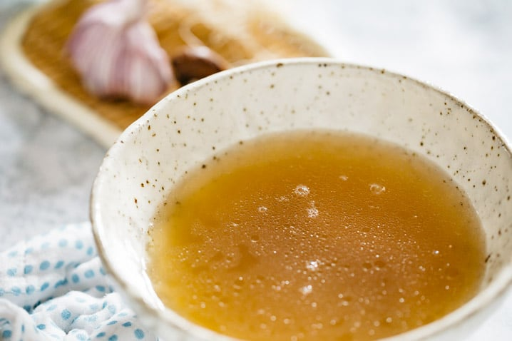

Chicken Stock

Description
Rich in chicken flavour, this japanese inspired chicken stock is the back bone
of many recipes such as ramen, chicken soups, rice dishes and other recipes that call for chicken stock
Ingredients
- 1Kg Chicken bones
- 350g Pork bones
- 1 Onion, peeled and chopped
- 2 Carrots (50g), chopped
- 4 Leeks (350g), sliced
- 25g Ginger root, sliced
- 4 Chinese cabbage leaves, roughly chopped
- 2 Teaspoons of salt
- 2 Teaspoons of sugar
- A Small pinch of white pepper
- 1 Teaspoon of dashi no moto
Steps
- Put the meat bones in a large pan, cover with cold water and bring almost to the boil
- Turn the heat right down and simmer for two hours, skimming off any froth that rises to the surface
- Add the vegetables and another litre of water, bring almost to the boil again
- Lower the heat and simmer for a further hour
- Remove from the heat and allow to cool
- Strain off the liquid, return to the saucepan and simmer for 1 hour to reduce further
- Season with the chicken stock seasoning below